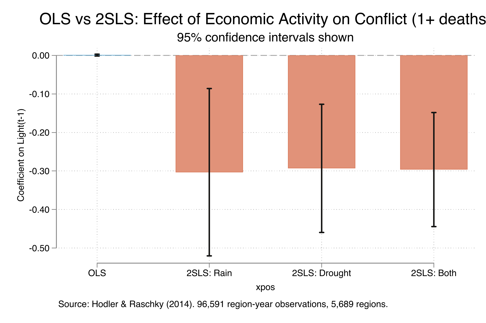
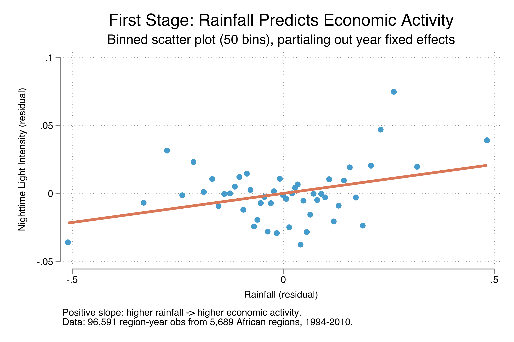
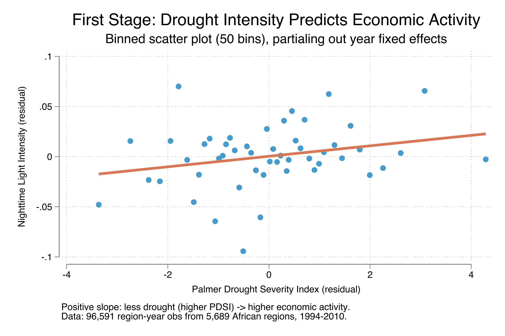
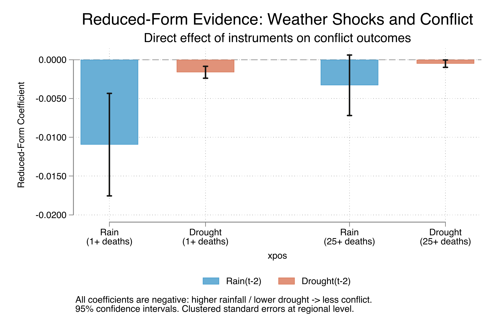
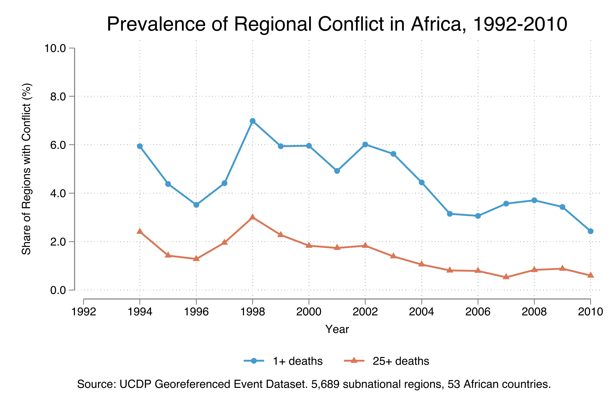

Economic shocks and civil conflict across 5,689 African regions
Nagoya University (GSID)
July 8, 2026
Act I
Poor regions see more conflict — but correlation is not causation.
So we regress conflict on economic activity — and the slope is 0.001, indistinguishable from zero. Is the effect real, or is the measurement broken?

OLS coefficient (steel) is indistinguishable from zero; all three 2SLS estimates (orange) cluster around −0.30 with CIs far from zero.
Act II
The instrumental-variables strategy attacks all three at once — if we can find an exogenous source of variation in economic activity.
Region effects, region trends, and year effects are pre-absorbed. SEs clustered on 5,689 regions.
The identification rests on a lag chain. Weather at \(t-2\) shifts agricultural output and hence economic activity (lights) at \(t-1\), which then shifts conflict at \(t\).
\[Light_{i,t-1} = \tilde\delta\, Weather_{i,t-2} + \tilde\alpha_i + \tilde\beta_i t + \tilde\gamma_t + \tilde\varepsilon_{it}\]
Weather predicts income — relevance.
\[Weather_{i,t-2} \not\to Conflict_{i,t}\ \text{(directly)}\]
Weather two years back touches today’s conflict only through income.
\[Conflict_{it} = \delta\, Light_{i,t-1} + \alpha_i + \beta_i t + \gamma_t + \varepsilon_{it}\]
\(\alpha_i\) are region fixed effects, \(\beta_i t\) region-specific trends, \(\gamma_t\) year effects. The parameter \(\delta\) is the causal effect of economic activity on conflict probability.
Estimand. Not the average effect over all regions. 2SLS recovers the Local Average Treatment Effect (LATE): the effect for the compliers — regions whose economic activity actually responds to weather variation.
Why it can exceed the ATE. Compliers are the more agriculturally exposed regions. Their conflict may be more income-sensitive — but since most African regions are heavily agricultural, the LATE–ATE gap is likely small.

Binned scatter (50 bins) of rainfall residuals vs nightlight residuals, year effects partialled out — a clear upward slope.

Binned scatter of drought (PDSI) residuals vs nightlight residuals — less drought predicts more economic activity, with a tighter fit than rainfall.

Reduced-form coefficients (weather → conflict): more rain and less drought both predict less future conflict, for both outcomes.

Conflict prevalence by year: any-death conflict (steel) peaks near 7% in 1998 then falls to ~2.5%; severe 25+ death conflict (orange) tracks below at one-third the rate.
Act III
0.001
OLS coefficient on lights (SE 0.001, p = 0.50) — attenuated to nothing by measurement error
−0.296
2SLS, both instruments (SE 0.076, p < 0.01) — roughly 300-fold the OLS magnitude, opposite sign
| Instrument | \(\hat\delta_{2SLS}\) | SE | Sig. 1%? |
|---|---|---|---|
| Rain(\(t-2\)) | −0.303 | 0.111 | yes |
| Drought(\(t-2\)) | −0.293 | 0.085 | yes |
| Both | −0.296 | 0.076 | yes |
The estimate barely moves across instruments — strong evidence the causal finding is robust, not an artifact of one weather variable.
A 10% fall in nighttime lights (\(\approx 0.1\) log units) raises the probability of any-death conflict by about 3 percentage points.
Against a 4.6% baseline, that is a 66% increase in conflict risk — from 4.6% to roughly 7.6% in an average region. For severe (25+ death) conflict the effect is about one-third as large.
| Test | Statistic | Threshold | Verdict |
|---|---|---|---|
| First-stage F (Rain) | 24.62 | > 16.38 | strong |
| First-stage F (Drought) | 40.33 | > 16.38 | strong |
| Hansen \(J\) (overid) | \(p = 0.93\) | \(p > 0.10\) | valid |
Both instruments clear Stock–Yogo by a wide margin; the overid test says they tell the same story.
Objection. Weather instruments don’t prove income causes conflict; you’ve just assumed exclusion.
Response. Correct — identification rests on relevance (testable: F = 24–40) and exclusion (untestable for a single instrument). The two-year lag makes a direct weather→conflict channel implausible, and the Hansen \(J\) shows the two instruments agree. IV disciplines the estimate; it cannot relax the identifying assumptions.